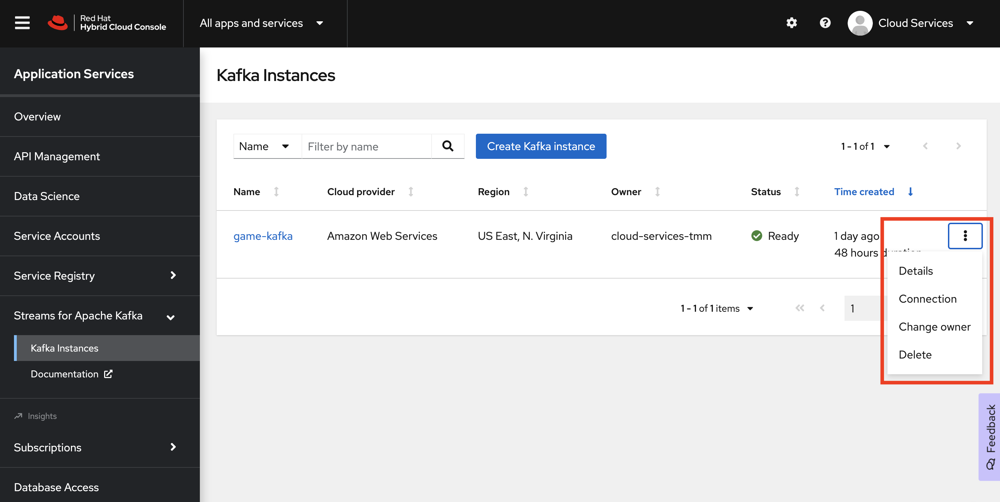
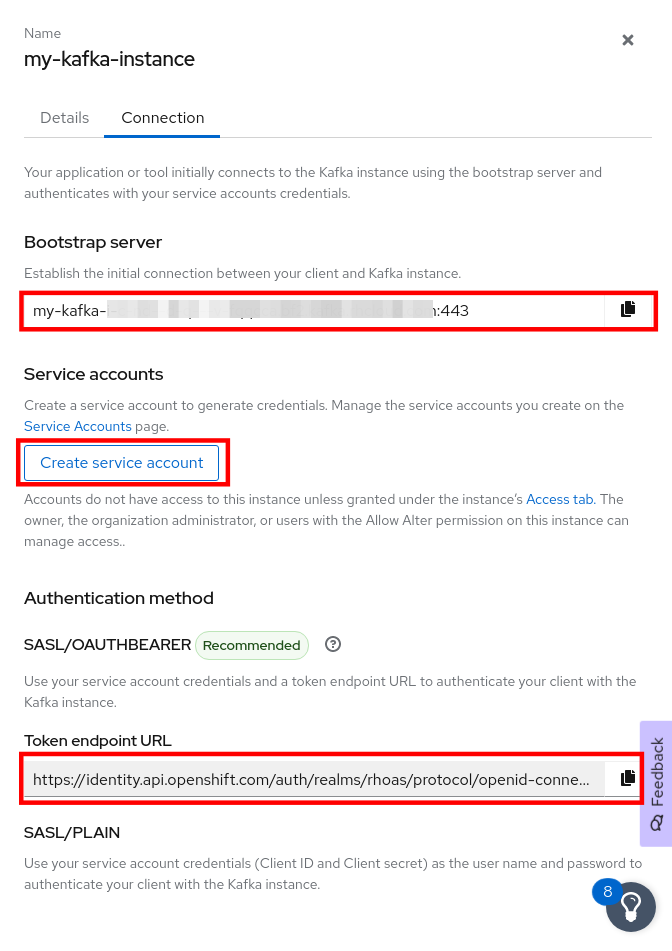
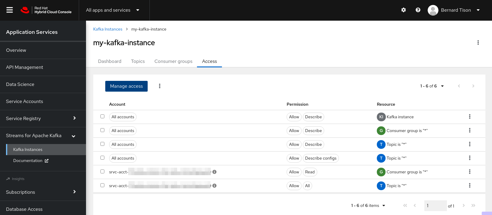

Manage Access to Kafka Instances
To connect your applications or services to a Streams for Apache Kafka instance, you need to create a service account.
Create a Service Account
-
On the Kafka Instances overview page, select the Options icon (the three dots) for the Kafka instance you just created. Select Connection to display connection information.
 -
Copy the Bootstrap server endpoint to a secure location. You will need this when connecting to your Kafka instance.
 -
Copy the Token endpoint URL of the SASL/OAUTHBEARER authentication method to a secure location. You will need this URL when connecting to your Kafka instance.
-
Click Create service account to set up the service account. Enter a unique service account name and an optional description, and click Create.
-
Copy the generated Client ID and Client Secret to a secure location. These are the credentials that you’ll use to connect to this Kafka instance.
The generated credentials are displayed only one time, so ensure that you’ve successfully and securely saved the copied credentials before closing the credentials window.
-
After saving the generated credentials, select the confirmation check box and close the Credentials window.

You’ll use the service account information that you saved to configure your application to connect to your Kafka instances when you’re ready. For example, if you plan to use kcat to interact with your Kafka instance, you’ll use this information to set your bootstrap server and client environment variables.
Set Permissions for a Service Account
After you create a service account to connect to a Kafka instance, you must also set the appropriate level of access for that new account in the Access Control List (ACL) of the Kafka instance. Streams for Apache Kafka uses ACLs provided by Kafka that enable you to manage how other user accounts and service accounts are permitted to interact with the Kafka resources that you create.
-
On the Kafka Instances page, click the name of the Kafka instance you previously created.
-
Click the Access tab to view the current ACL for this instance.

-
Click Manage access, use the Account drop-down menu to select the service account that you previously created, and click Next.
-
Under Assign Permissions, use the drop-down menus to set the permissions shown in the following table for this service account. Click Add to add each new resource permission.
These permissions enable applications associated with the service account to create and delete topics in the instance, to produce and consume messages in any topic in the instance, and to use any consumer group and any producer.
Table 1. Example ACL permissions for a new service account Resource type
Resource identifier and value
Access type
Operation
TopicIs=*AllowAllConsumer groupIs=*AllowRead -
After you add these permissions for the service account, click Save to finish.